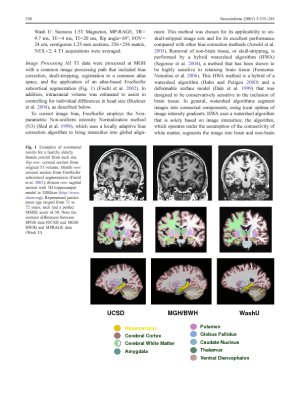
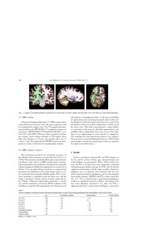

Publications
A record of my research work, in reverse chronological order
| Intracranial cortical responses during visual-tactile integration in humans. Quinn BT, Carlson C, Doyle W, Cash SS, Devinsky O, Spence C, Halgren E, Thesen T. J Neurosci. 2014 Jan 1;34(1):171-81. |

|
Abnormalities of cortical thickness in postictal psychosis. DuBois JM, Devinsky O, Carlson C, Kuzniecky R, Quinn BT, Alper K, Butler T, Starner K, Halgren E, Thesen T. Epilepsy Behav. 2011 Jun;21(2):132-6. Epub 2011 May 4. |
| Hyperfamiliarity for faces. Devinsky O, Davachi L, Santchi C, Quinn BT, Staresina BP, Thesen T. Neurology. 2010 Mar 23;74(12):970-4. |

|
Phonetically irregular word pronunciation and cortical thickness in the adult brain. Blackmon K, Barr WB, Kuzniecky R, Dubois J, Carlson C, Quinn BT, Blumberg M, Halgren E, Hagler DJ, Mikhly M, Devinsky O, McDonald CR, Dale AM, Thesen T. Neuroimage. 2010 Jul 15;51(4):1453-8. Epub 2010 Mar 17. |

|
Impact of breast milk on intelligence quotient, brain size, and white matter development. Isaacs EB, Fischl BR, Quinn BT, Chong WK, Gadian DG, Lucas A. Pediatr Res. 2010 Apr;67(4):357-62. |
| The effect of early human diet on caudate volumes and IQ. Isaacs EB, Gadian DG, Sabatini S, Chong WK, Quinn BT, Fischl BR, Lucas A. Pediatr Res. 2008 Mar;63(3):308-14. |
|  | Feasibility of multi-site clinical structural neuroimaging studies of aging using legacy data. Fennema-Notestine C, Gamst AC, Quinn BT, Pacheco J, Jernigan TL, Thal L, Buckner R, Killiany R, Blacker D, Dale AM, Fischl B, Dickerson B, Gollub RL. Neuroinformatics. 2007 Winter;5(4):235-45. Epub 2007 Nov 13. |

|
Detection of cortical thickness correlates of cognitive performance: Reliability across MRI scan sessions, scanners, and field strengths. Dickerson BC, Fenstermacher E, Salat DH, Wolk DA, Maguire RP, Desikan R, Pacheco J, Quinn BT, Van der Kouwe A, Greve DN, Blacker D, Albert MS, Killiany RJ, Fischl B. Neuroimage. 2008 Jan 1;39(1):10-8. Epub 2007 Sep 5. |

|
Abnormal cortical folding patterns within Broca's area in schizophrenia: evidence from structural MRI. Wisco JJ, Kuperberg G, Manoach D, Quinn BT, Busa E, Fischl B, Heckers S, Sorensen AG. Schizophr Res. 2007 Aug;94(1-3):317-27. Epub 2007 May 9. |

|
A technique for the deidentification of structural brain MR images. Bischoff-Grethe A, Ozyurt IB, Busa E, Quinn BT, Fennema-Notestine C, Clark CP, Morris S, Bondi MW, Jernigan TL, Dale AM, Brown GG, Fischl B. Hum Brain Mapp. 2007 Sep;28(9):892-903. |

|
Neuroimaging H.M.: a 10-year follow-up examination. Salat DH, van der Kouwe AJ, Tuch DS, Quinn BT, Fischl B, Dale AM, Corkin S. Hippocampus. 2006;16(11):936-45. |

|
The functional and structural significance of the frontal shift in the old/new ERP effect. Walhovd KB, Fjell AM, Reinvang I, Lundervold A, Fischl B, Quinn BT, Makris N, Dale AM. Brain Res. 2006 Apr 7;1081(1):156-70. Epub 2006 Mar 20. |

|
Regional cortical thickness matters in recall after months more than minutes. Walhovd KB, Fjell AM, Dale AM, Fischl B, Quinn BT, Makris N, Salat D, Reinvang I. Neuroimage. 2006 Jul 1;31(3):1343-51. Epub 2006 Mar 15. |
| Orbitofrontal thickness, retention of fear extinction, and extraversion. Rauch SL, Milad MR, Orr SP, Quinn BT, Fischl B, Pitman RK. Neuroreport. 2005 Nov 28;16(17):1909-12. |

|
Meditation experience is associated with increased cortical thickness. Lazar SW, Kerr CE, Wasserman RH, Gray JR, Greve DN, Treadway MT, McGarvey M, Quinn BT, Dusek JA, Benson H, Rauch SL, Moore CI, Fischl B. Neuroreport. 2005 Nov 28;16(17):1893-7. |

|
Selective increase of cortical thickness in high-performing elderly--structural indices of optimal cognitive aging. Fjell AM, Walhovd KB, Reinvang I, Lundervold A, Salat D, Quinn BT, Fischl B, Dale AM. Neuroimage. 2006 Feb 1;29(3):984-94. Epub 2005 Sep 19. |

|
Thickness of ventromedial prefrontal cortex in humans is correlated with extinction memory. Milad MR, Quinn BT, Pitman RK, Orr SP, Fischl B, Rauch SL. Proc Natl Acad Sci U S A. 2005 Jul 26;102(30):10706-11. Epub 2005 Jul 15. |

|
Effects of age on volumes of cortex, white matter and subcortical structures. Walhovd KB, Fjell AM, Reinvang I, Lundervold A, Dale AM, Eilertsen DE, Quinn BT, Salat D, Makris N, Fischl B. Neurobiol Aging. 2005 Oct;26(9):1261-70; discussion 1275-8. |
|  | Cortical volume and speed-of-processing are complementary in prediction of performance intelligence. Walhovd KB, Fjell AM, Reinvang I, Lundervold A, Fischl B, Salat D, Quinn BT, Makris N, Dale AM. Neuropsychologia. 2005;43(5):704-13. |

|
Age does not increase rate of forgetting over weeks--neuroanatomical volumes and visual memory across the adult life-span. Fjell AM, Walhovd KB, Reinvang I, Lundervold A, Dale AM, Quinn BT, Makris N, Fischl B. J Int Neuropsychol Soc. 2005 Jan;11(1):2-15. |

|
Sequence-independent segmentation of magnetic resonance images. Fischl B, Salat DH, van der Kouwe AJ, Makris N, Ségonne F, Quinn BT, Dale AM. Neuroimage. 2004;23 Suppl 1:S69-84. |

|
Size does matter in the long run: hippocampal and cortical volume predict recall across weeks. Walhovd KB, Fjell AM, Reinvang I, Lundervold A, Fischl B, Quinn BT, Dale AM. Neurology. 2004 Oct 12;63(7):1193-7. |